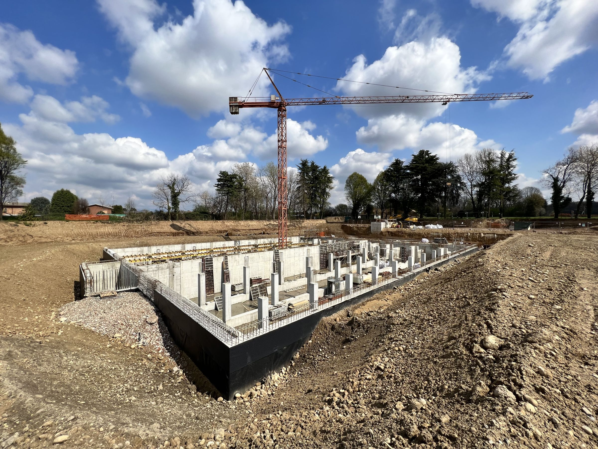

Gestire l'acqua con precisione e visione
La progettazione idraulica richiede competenze specialistiche unite a una visione sistemica del territorio.
Operiamo su scala locale e regionale, dalla singola opera idraulica alla pianificazione di bacino, con un approccio integrato che considera sia gli aspetti tecnici che quelli ecologici.
Richiedi consulenza
Competenze idrauliche
Studi idrologici
Analisi delle precipitazioni, calcolo delle portate di piena, modellazione dei bacini idrografici e valutazione del rischio idraulico.
Progettazione reti idriche
Acquedotti, fognature, reti di irrigazione e sistemi di drenaggio urbano sostenibile progettati con software specializzati.
Opere di difesa idraulica
Argini, casse di espansione, briglie e opere di ritenzione per la mitigazione del rischio alluvionale.
Modellazione numerica
Simulazioni 1D e 2D del moto delle acque, con software come HEC-RAS, MIKE FLOOD e strumenti GIS avanzati.
VIA e VAS
Supporto nelle procedure di Valutazione di Impatto Ambientale e Valutazione Ambientale Strategica per opere idrauliche.
Riqualificazione fluviale
Interventi di rinaturalizzazione degli alvei, recupero degli habitat ripari e miglioramento dello stato ecologico dei corsi d'acqua.